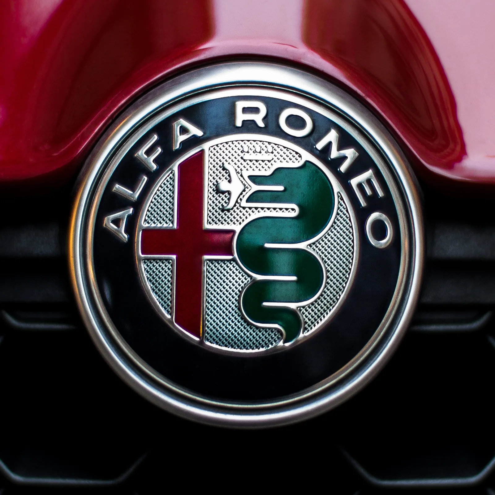
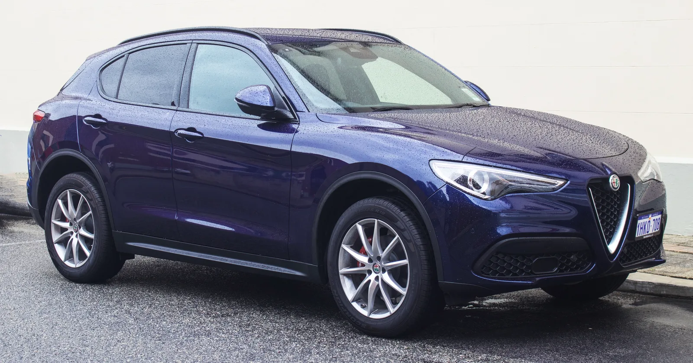
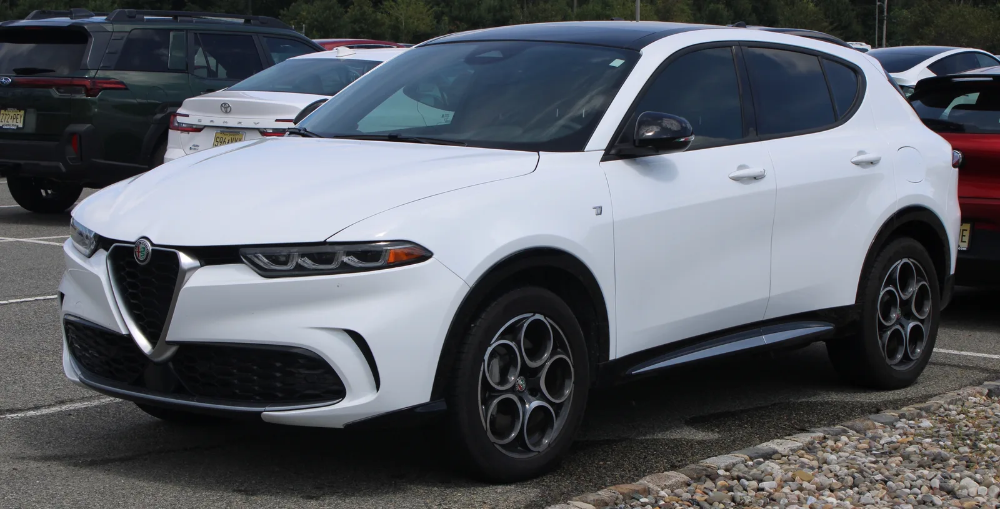
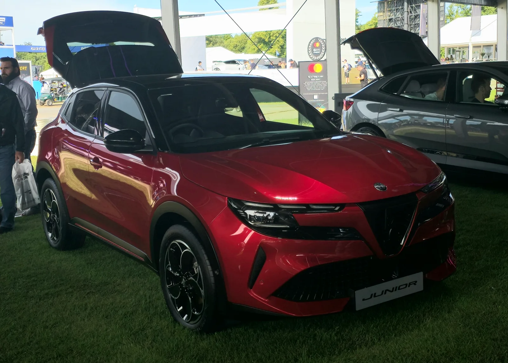

▲ 알파로메오의 중형 세단 줄리아. 브랜드의 스포츠 헤리티지를 가장 직접적으로 계승한 모델로 꼽힌다 ⓒ TTTNIS / Wikimedia Commons (CC0)
1920년, 스물두 살의 청년 엔초 페라리가 레이싱 드라이버로 커리어를 시작한 팀은 자신의 이름을 건 회사가 아니었다. 바로 알파로메오였다. 그는 이곳에서 실력을 쌓은 뒤 1929년 독립해 스쿠데리아 페라리를 세웠고, 이후 알파로메오의 레이싱 부문 운영을 맡기도 했다. 이런 유서 깊은 브랜드가 정작 한국 도로에서는 좀처럼 보이지 않는다. 정식 수입사가 없기 때문이다.
그렇다고 알파로메오가 사라진 브랜드는 아니다. 스텔란티스 산하에서 지금도 줄리아, 스텔비오, 토날레, 주니어 네 개 모델을 글로벌 시장에 판매 중이며, 최근에는 CEO가 직접 나서 브랜드 매각설을 일축하기도 했다. 116년 역사의 브랜드가 왜 한국에만 없는지, 그리고 지금 어떤 차를 팔고 있는지 취합했다.
1. 방패와 네잎클로버 — 알파로메오 배지에 새겨진 116년
알파로메오는 1910년 6월 24일 밀라노에서 A.L.F.A.(Anonima Lombarda Fabbrica Automobili, 롬바르디아 자동차 제조 익명회사)라는 이름으로 창립했다. 1915년 실업가 니콜라 로메오가 회사를 인수하면서 그의 성이 사명에 더해져 지금의 '알파로메오'가 됐다. 이후 한 세기가 넘는 시간 동안 레이스 트랙과 도로를 오가며 이탈리아 스포츠카 브랜드의 원형을 만들어왔다.

▲ 알파로메오 엠블럼. 왼쪽 붉은 십자가는 밀라노를, 오른쪽 뱀(비스콘티 문장)은 사람을 삼키는 형상으로 14세기 비스콘티 가문을 상징한다 ⓒ Ivan Radic / Wikimedia Commons (CC BY 2.0)
배지 자체에도 이야기가 켜켜이 쌓여 있다. 방패 모양의 '스쿠데토(Scudetto)'는 1934년 6C 2300 투리스모 모델부터 쓰이기 시작했고, 그 안의 문양은 밀라노시의 상징인 붉은 십자가와 비스콘티 가문의 문장인 '사람을 삼키는 뱀(비스코네)'을 결합한 것이다. 여기에 더해 최고 성능 트림에는 초록색 네잎클로버, 즉 '콰드리폴리오(Quadrifoglio)'가 따로 붙는다. 1923년 한 드라이버가 레이스 전 행운을 빌며 차체에 손수 그려 넣었다가 실제로 우승을 차지하면서 알파로메오 고성능 모델의 상징으로 굳어졌다는 일화가 전해진다.
2. 왜 한국 도로에는 알파로메오가 없을까
알파로메오가 한국 땅을 완전히 처음 밟은 건 아니다. 1996년, 당시 재계 서열 상위권이었던 한보그룹이 피아트와 손잡고 강남에 '이탈리아 모터스'라는 딜러십을 열어 166, 155, GTV, 스파이더 등 4개 모델의 정식 수입을 시작했다. 그러나 곧이어 한보그룹이 부도를 맞았고, 1997년 외환위기까지 겹치면서 단 한 대의 차량도 제대로 판매하지 못한 채 1년을 채우지 못하고 철수했다.
그 뒤로도 재진출 시도가 없었던 건 아니다. 2017년에는 국내 진출이 확정됐다는 보도가 나왔고, FCA(피아트크라이슬러) 측은 2018년 하반기 런칭을 목표로 검토를 이어갔다. 세르지오 마르치오네 당시 FCA 회장을 비롯해 파블로 로쏘 전 FCA코리아 사장, 이후 제이크 아우만 스텔란티스코리아 사장까지 여러 경영진이 알파로메오의 한국 진출에 긍정적인 입장을 밝힌 것으로 알려졌다.
✅ 국내 도입 검토 타임라인
· 1996~1997: 한보그룹, 이탈리아 모터스 통해 정식 수입 — 판매 전 철수
· 2017: 국내 진출 확정 보도
· 2018 하반기: FCA, 런칭 목표 시점으로 거론
· 2019: 본사와 협의 지속 중이라는 보도 이후 관련 소식 끊김
· 2026년 현재: 정식 수입사 없음, 구체적 재진출 일정 미공개
스포츠 지향적 프리미엄 브랜드가 국내 소비자 성향과 잘 맞지 않는다는 분석도 꾸준히 나온다. 스텔란티스 그룹 안에서 최상위 럭셔리 포지션은 이미 마세라티가 맡고 있어, 알파로메오가 들어올 경우 브랜드 간 포지셔닝이 겹칠 수 있다는 점도 도입이 늦어지는 배경 중 하나로 꼽힌다.
3. 그래서 지금, 알파로메오는 어떤 차를 팔고 있나
정식 수입은 없지만 브랜드 자체는 멈추지 않았다. 스텔란티스 산하 알파로메오는 세단 1종, SUV 2종, 소형 전기 SUV 1종으로 구성된 4개 모델 라인업을 유지하며 유럽과 북미 등지에서 판매 중이다.
| 모델 | 세그먼트 | 특징 |
|---|---|---|
| 줄리아 (Giulia) | 중형 스포츠 세단 | 후륜/AWD 기반, 브랜드 헤리티지를 가장 직접 계승. 고성능 콰드리폴리오 트림 존재 |
| 스텔비오 (Stelvio) | 중형 SUV | 줄리아와 플랫폼 공유, 콰드리폴리오 트림에 트랙 성능 세팅 탑재 |
| 토날레 (Tonale) | 준중형 SUV | 2022년 출시된 브랜드 최신 SUV, 플러그인 하이브리드 트림 보유, 콰드리폴리오는 미운영 |
| 주니어 (Junior) | 소형 SUV | 브랜드 최초의 소형 순수전기 모델, 2024년 출시. 하이브리드 '이브리다' 버전도 병행 판매 |

▲ 알파로메오의 중형 SUV 스텔비오. 줄리아와 플랫폼을 공유하며 브랜드 SUV 라인업의 상위 모델을 맡고 있다 ⓒ LuvsMG481 / Wikimedia Commons (CC BY-SA 4.0)
미국 시장 기준으로 토날레는 3만 7,000달러대, 줄리아와 스텔비오는 각각 4만 8,000달러·5만 달러 안팎부터 시작하는 것으로 알려져 있다. 다만 이는 현지 가격일 뿐이며, 국내에 정식 수입될 경우 관세·인증·부가세 등이 더해져 실제 판매가는 이보다 상당히 높아질 수밖에 없다.

▲ 알파로메오 토날레. 2022년 데뷔한 준중형 SUV로 브랜드 라인업 중 가장 최근에 완전 신차로 나온 모델이다 ⓒ BuickRiviera99 / Wikimedia Commons (CC BY-SA 4.0)
흥미로운 대목은 알파로메오가 미국에서 줄리아 콰드리폴리오와 스텔비오 콰드리폴리오의 판매 중단을 앞두고 한정판을 내놨다는 점이다. 검은색 삼각형 배경에 네잎클로버를 새긴 특별 배지를 단 이 한정판은 줄리아 콰드리폴리오 275대, 스텔비오 콰드리폴리오 175대만 생산되며, 이 중 각각 52대와 72대가 미국 시장에 배정된 것으로 전해진다. 브랜드 전동화 전환 과정에서 내연기관 고성능 모델에 작별을 고하는 상징적인 이벤트인 셈이다.
4. 주니어 — 알파로메오의 첫 순수전기 모델
2024년 4월 공개된 주니어는 알파로메오 최초의 소형 전기 SUV라는 점에서 의미가 남다르다. 전기 모델은 156~280마력 사이의 영구자석 동기모터를 얹고, 트림에 따라 1회 충전 주행거리가 약 347~410km 수준으로 알려져 있다. 여기에 48V 마일드 하이브리드 시스템을 탑재한 '이브리다' 버전도 함께 판매돼, 완전 전동화 이전 단계의 소비자 선택지를 넓혔다.

▲ 알파로메오 주니어. 2024년 출시된 브랜드 최초의 소형 전기 SUV로, 영국에서는 2만 7,895파운드(약 5,000만 원)부터 시작하는 이브리다 트림도 함께 판매된다 ⓒ Calreyn88 / Wikimedia Commons (CC0)
주니어는 소형 크로스오버 세그먼트에서 알파로메오 특유의 디자인 언어와 주행 감각을 상대적으로 낮은 가격대에 담아낸 모델로 평가받는다. 다만 이 모델 역시 아직 한국 출시 계획은 공개된 바 없다.
5. 그래도 한국에 알파로메오는 있다 — 병행수입 매니아들
정식 수입사가 없다고 해서 국내에 알파로메오가 단 한 대도 없는 건 아니다. 극소수이지만 매니아층을 중심으로 미토, 스파이더, GTV, 4C 같은 모델이 병행수입이나 해외 이사짐(이주화물) 형태로 들어와 있다. 다만 국내에 공식 서비스센터나 부품 유통망이 없다 보니, 오너들은 정비와 부품 수급을 대부분 개인 루트나 해외 직구에 의존해야 하는 것으로 알려졌다.
국내 알파로메오 오너 및 병행수입 관련 배경은 오토뷰 기사에서 자세히 확인할 수 있다. 오토뷰 알파로메오 기사 바로가기
6. 알파로메오, 한국에 다시 올 수 있을까
브랜드의 존속 자체에 대한 우려는 최근 들어 오히려 잦아드는 분위기다. 2025년 11월 스텔란티스 CEO는 알파로메오를 두고 "그룹의 보석 같은 브랜드"라고 표현하며, 중국 기업의 인수 제의를 거절했다고 밝혔다. 브랜드 매각설을 정면으로 부인한 셈이다. 전동화 전환도 단계적으로 진행 중이어서, 스텔비오는 2025년, 줄리아는 2026년을 목표로 한 세대교체를 통해 2027년까지 라인업 전동화를 완성한다는 계획이 이전부터 제시돼 왔다.
다만 이러한 브랜드 차원의 움직임과 별개로, 한국 시장 재진출에 대한 구체적인 일정은 이 글을 쓰는 현재까지 공식적으로 확인되지 않는다. 스텔란티스코리아가 지프·푸조·DS·크라이슬러 등 여러 브랜드를 이미 운영하고 있는 만큼, 알파로메오 도입 여부는 국내 프리미엄 수입차 시장의 수요와 그룹 전체의 브랜드 포트폴리오 전략에 달려 있을 것으로 보인다.
알파로메오는 한국에 없는 브랜드이지만, 없었던 적은 없다. 1996년 짧은 정식 수입 시도, 2017~2019년의 재진출 검토, 그리고 지금도 병행수입으로 명맥을 잇는 소수의 오너들까지 — 116년 역사의 이탈리아 브랜드는 한국과 늘 '아주 가까운 거리'에 머물러 있었다.
지금 당장 국내 출시를 기대하기는 어렵지만, 줄리아·스텔비오·토날레·주니어로 이어지는 라인업과 진행 중인 전동화 전환을 보면 브랜드 자체의 생명력은 오히려 탄탄해 보인다. 스쿠데토 방패와 초록 네잎클로버가 언젠가 한국 번호판을 달고 도로를 달리는 날이 올지, 계속 지켜볼 부분이다.